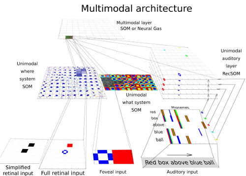
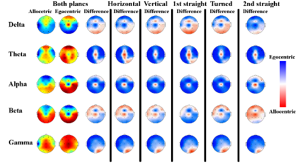

Projects
Bio-inspired Model of Spatial Cognition
We are developing a model for grounding the spatial terms that stem from the neurobiological findings of the visual information processing in humans. Our goal was to implement the theory of two separate visual systems into the simplified neural model. The model represents object features (shape and color) and object position (spatial quadrant) and consists of two SOMs for processing what information (foveal input) and where information (retinal input). The system process five-word sentences describing the scene (e.g. “Red box above green circle”) served as auditory (linguistic) inputs with phonological encoding and the described scenes are presented as the visual inputs (to an artificial retina). The visual scene is represented in SOM and the auditory description is processed by RecSOM, a recurrent SOM-based model for processing sequences. Both these primary representations are integrated in a multimodal module (SOM or NG) in the second layer. We tested this two-layer architecture in several conditions (scenes with varying complexity with 2-3 colors, 2-5 object shapes and 4 spatial relations). In the scenes with higher complexity we reached better results in case of using NG algorithm in the multimodal layer compared to SOM. We confirmed the effectiveness of separate visual processing of shape and spatial properties. We concluded that the biologically inspired hypothesis about processing of visual information in separate subsystems is also advantageous in the area of neural modeling.
Neural correlates of spatial navigation in a 3D environment
The goal of the study was to test a modified version of the tunnel task (Schönebeck et al., 2001) in the 3D virtual environment to localize neural structures responsible for egocentric or allocentric processing in horizontal and vertical plane. We recorded EEG signal within the travel through a virtual tunnel to search for differences between mentioned frames of reference. The signal was decomposed to a set of basic features and the data serves as an input for feature selection and classification algorithms. We identified intra- and interhemispheric coherences in occipito-parietal and temporo-parietal areas as the most salient features for the frames of reference differentiation. These results were compared to the recent fMRI and EEG studies focused on localization of specific brain structures involved in this processing. The analysis of the navigation in horizontal and vertical plane uncover only minor differences in terms of brain structures responsible for allocentric and egocentric strategy. Interestingly, there were participants (40%) adopting two types of egocentric reference frames in the vertical plane. The first group (16%) rotated the egocentric frame only in horizontal plane and second group (24%) did the rotation in both planes.

Briefly about me
I am a young researcher interested in the cognitive science. My research combines theories and methods of cognitive psychology, neuroscience and computational modeling. I focus on the knowledge representation in the area of spatial cognition.
Contact
Michal Vavrečka
BioDat research Group
Gerstner Laboratory
Faculty of Electrical Engineering
Czech Technical University
Karlovo namesti 13
Prague
Office: E209
email:vavrecka@fel.cvut.cz
phone: +420224357609
cell: +420608661977